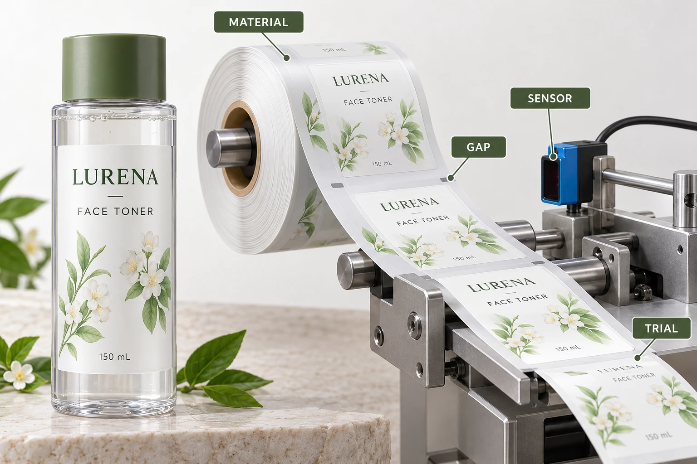

Distinguish the product view from the sensor view
The customer sees a finished bottle. The detection system sees a changing web composed of label and backing regions. Clear film, printed areas, liner and gap therefore belong to the operating discussion, even if the applied label already meets the brand's visual objective.
Ask the receiving site which component detects the boundary and what it expects. Record the actual machine, sensor reference and any relevant configuration supplied by the operator. Avoid sending a clear-film swatch to an office contact and treating a general yes as line approval.
The roll-specification guide covers the broader handoff. This article isolates detection evidence and the response to an unresolved boundary event, rather than redefining core size or unwind conventions.
Get the detector's actual instructions
SICK's UFN operating instructions describe an ultrasonic label sensor and its teach-in procedure. That is evidence of an equipment-specific route, not a procedure for every installed applicator.
Have the authorized operator or equipment supplier determine the relevant setup and safe trial method. This guide does not prescribe sensor placement, sensitivity, teach values, speed or machine adjustments. A web photo cannot establish those settings.
Also distinguish detection from dispensing. A sensor may recognize a boundary while another event prevents correct release at the dispensing edge. The liner-release guide addresses that separate interface. Ask the operator where the observed event occurs before assigning it to either system.
Supply a representative web
The proposed trial should identify the actual label construction, printing and liner, with the intended gap and delivery arrangement. Ask the operator what sample length and format are needed. Loose finished stickers are not a substitute for a web where the relevant boundary must be detected repeatedly.
If only a preliminary construction is available, record what differs from production and ask which conclusions can reasonably carry forward. A successful trial on one liner does not automatically approve another whose interaction with the system has not been assessed.
Where more than one artwork version will pass the same detector, ask whether printing differences matter to that installed technology and trial. Do not assume that every optical or ultrasonic arrangement responds to the same variables. The equipment owner should decide the representative scope.
Agree what a useful trial report contains
Use the following record to connect the material and equipment evidence. It is an editorial coordination tool, not an equipment acceptance standard.
| Field | Information to collect | Release use |
|---|---|---|
| Equipment | Site, line and installed detector reference | Know which operation is being qualified |
| Supply | Face, adhesive, liner, print and sample ID | Establish production relevance |
| Web | Actual gap and proposed delivery arrangement | Match the boundary presented to the detector |
| Procedure | Operator-approved setup and trial reference | Keep investigation within the site's method |
| Observation | Event location, missed or unexpected detection if observed | Separate detection from later dispensing |
| Scope | Artworks and material variations represented | Avoid an unsupported all-SKU conclusion |
| Decision | Operator acknowledgement and unresolved conditions | Define what may proceed |
First confirm the equipment and supplied construction. Have the operator define the trial, conduct it under the site's procedures and identify observations and limitations. Connect the resulting decision to the exact web reference that will be ordered.
If detection remains unresolved, hold the affected operating release and ask the equipment owner which material or supported sensing route needs review. Do not add a mark, change the gap or alter the liner informally; each change can affect other artwork and conversion requirements.

Two receiving operations can need different answers
A hypothetical brand applying presentation samples by hand does not need to qualify an automated detector for that task. It may still need to record material and artwork identity for a later machine run.
A brand sending clear labels to an OEM's established applicator does need the installed operation's acknowledgement. Purchasing a transparent appearance without that handoff can leave a missing production decision even when every printed label looks attractive.
For cosmetic label orders, send the bottle details, artwork, dimensions, quantity per design and the receiving site's web and detection requirements. Include the operator's actual unresolved question. The contact form prepares a message; send specifications and trial records by email or WhatsApp. A qualified receiving route is more useful than an unsupported claim that clear film works on machines.